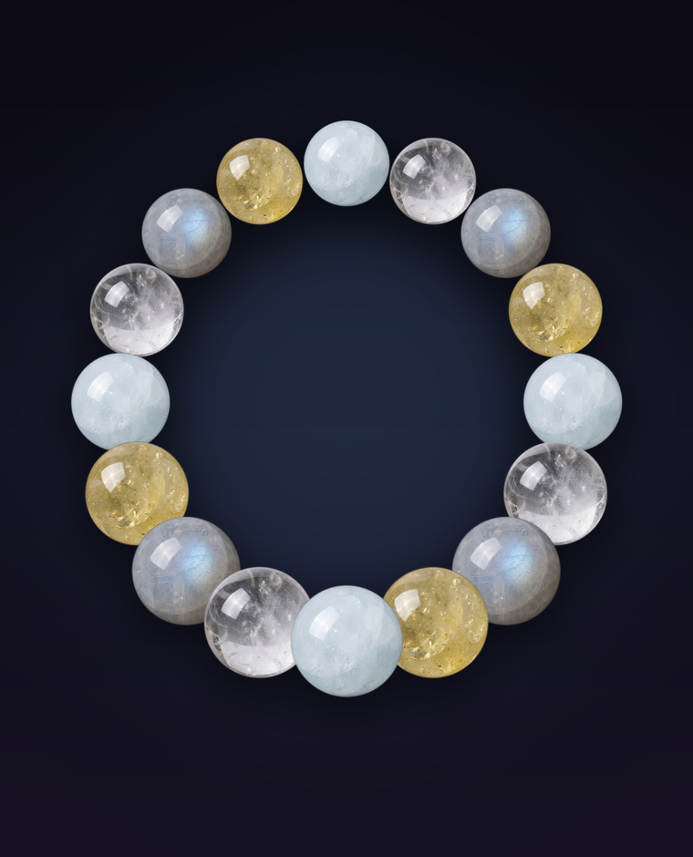
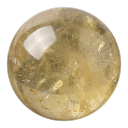
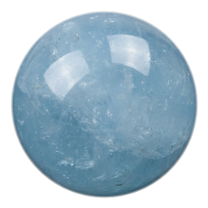
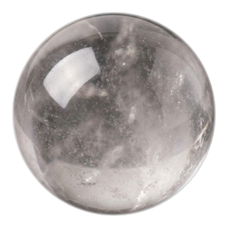
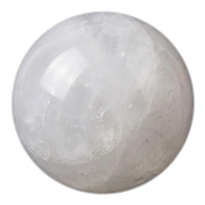

A Stone Whisper design · for the morning everything's new
A first day, a fresh start, a clean page — built to walk in light, not loud.
It needs light. Most jewelry for a big day reaches for something bold — this one goes the other way. It runs pale and clear: a misty aquamarine, a clear quartz that just lets the light through, a warm citrine, and a moonstone with that shifting blue sheen. Fresh, not loud — something to start clean in.
Four stones · each with a job

Clear light gold — not orange, not heavy. It reads as the warm, forward pull: the colour of moving toward the bright side, kept where you can glance down and see it.

A pale, sea-through-fog blue — not a bright gem blue, a soft misty one. The old read on it is the pause before you snap back: a cool place to land when the morning runs fast.

Almost colourless and clean — it doesn't take a colour, it gives the light room. The blank space on the strand, for when you want to clear the deck and start over.

Cool milky white with a blue sheen that slides across it when you turn your wrist. Its old name is the stone for beginning again — the quiet one that holds the whole idea.
The faint clouds, the inclusions, the moonstone's moving sheen — that's the stone being real, not a flaw to hide.
Every bead is checked and sourced before it's strung and shipped. No dyed or glass stand-ins.
Pick your wrist and bead size and the count adjusts — a 10mm bead and a 6mm bead carry different weight.
Keep First Day as it is, or open it in the studio and swap a stone, change the size, build from here.
Open the Studio →Stone Whisper · works on iPhone & Android